클리어 당시 스쿼드 투력
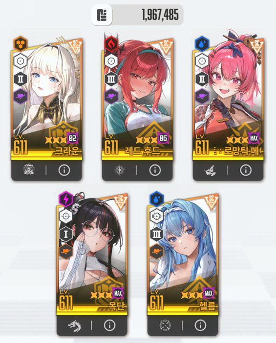
선 4줄 요약
1. 2:57, 2:44, 2:31 칼같은 풀버 필수
2. ㅈ만한 라피 적정거리 위치 타격
3. 첫 투사체 패턴때는 버스트 사용 금지
4. 버스트 순서는 라피한테 메스트 묻히기
내가 겜트북이라 영상 찍으면서 하면 목단이 계속 쳐 뒤지길래 유튭에 있는 남의 영상으로 설명하는 부분 양해바람
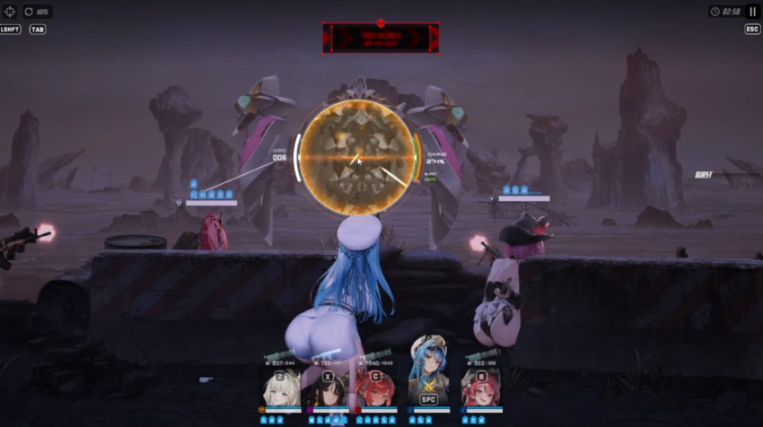
시작하자마자 헬름 잡고 풀버
풀차지 2방-톡톡이 1방으로 켜도 되는데 나는 극한으로 땡기기 위해서 1발 풀차지 5발 톡톡이로 함 이래야 헬름 막타 크확버프 받고 리트 확률이 줄어듦
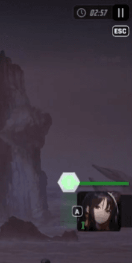
이렇게 2:57에 버스트가 완충되면 성공적인 상황임
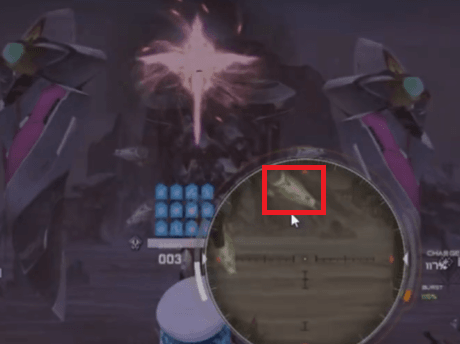
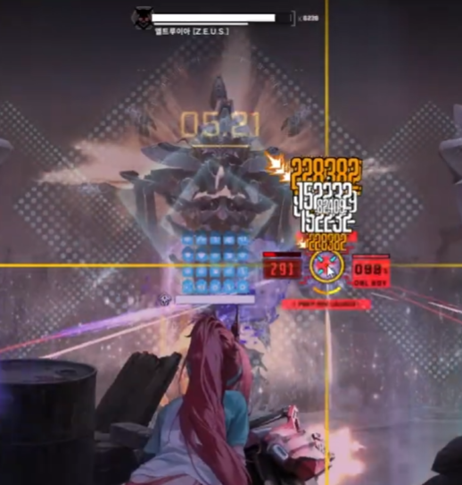
빨간 네모 쳐진 저 부분이 라피 적정거리 위치임 앨트루이아에 있는 후광 전부 다 적정거리인데 저기 조준하는게 가장 편할거임
풀버 키면 헬름으로 조준하던 라피로 조준하던 저길 때려야 딜이 안 부족함
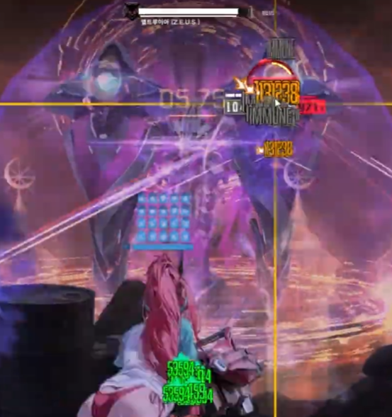
라피 풀버 끝나면 속성저지 패턴이 나오는데 이때 저지를 가능한 늦게 해줘야 함
투사체 패치때문에 패턴이 패치 전보다 빨라져서 조금이라도 빠르게 저지하면 이후에 나올 버스트 타이밍 전부 꼬이게 됨
이때는 풀버 켜지는 시간은 2:44여야 함 늦으면 이 뒤에 나올 패턴에서 꼬임
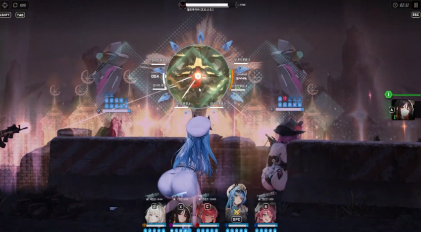
속성저지 끝나면 곧바로 광휘 패턴인데 여기서 메스트 3스택 받은 라피로 시간 안에 못 깨면 스펙 부족이므로 더 캠핑하고 올 것
버스트 타이밍은 무조건 2:31에 켜져야 함 안 그러면 늦음
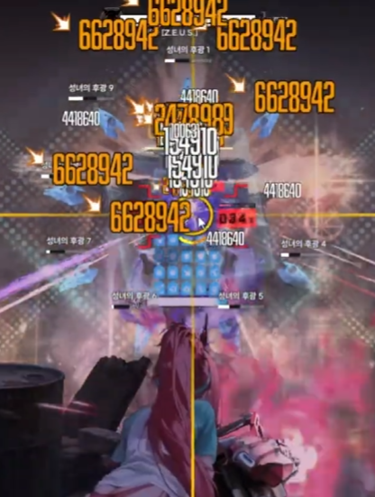
이렇게 가운데 조준하면 모든 광휘 타격이 가능하므로 라피 유탄 3~4번 안에 다 터트려야 딜이 안 부족할 거임
유탄 5번까지 가면 다 깨지기는 해도 마지막까지 가면 딜이 부족해서 못깸
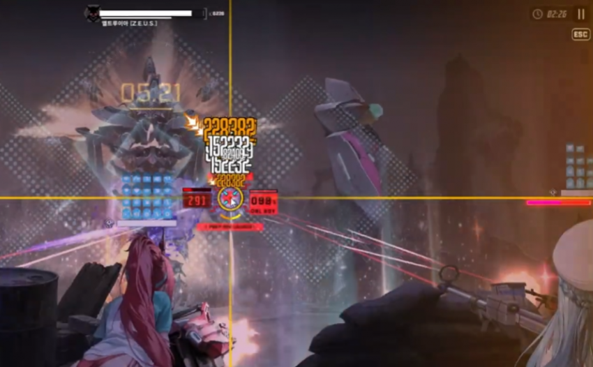
광휘 다 깨자마자 바로 적정거리 타격을 하는데
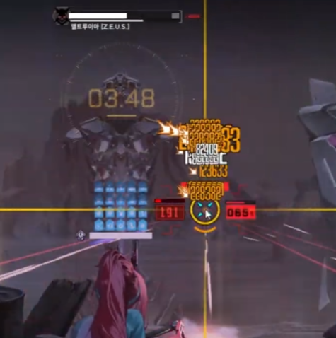
풀버 끝나기 전에 광휘를 빠르게 집어넣는 모션이 있음 이거 보고 esc컨으로 빠르게 몸통을 조준하거나 예측샷으로 몸통 미리 가 있어도 됨
근데 예측샷으로 미리 가 있으면 그만큼 딜손실이겠지?
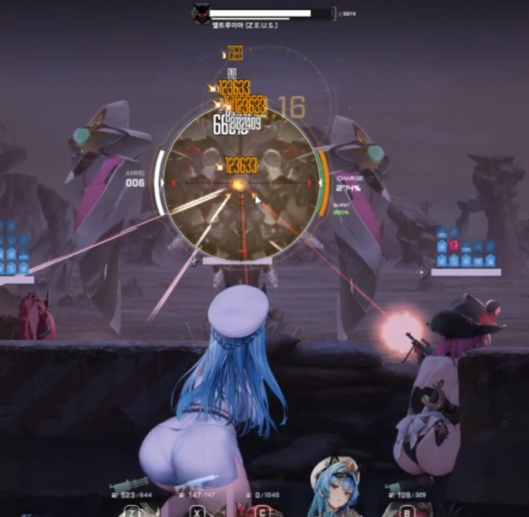
이후 헬름으로 풀차지 대기하면서 빠르게 버충을 해줘야 함
여기서 헬름 풀차지 2방을 못 맞히면 이 뒤에 나올 족자패턴에서 버스트 타이밍이 꼬여서 딜 손실 남
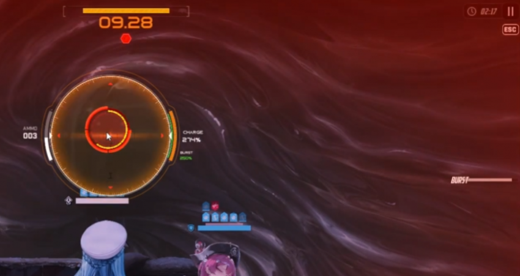
이게 가장 이상적인 상황임
저때 버스트 게이지 조금 남았다고 톡톡이하면 ㅈ됨 탄창 다 비워도 존나 조금 남아서 무조건 풀차지로 땡기삼
결과적으로 족자패턴 들어가기 전에 풀버를 키려면 헬름으로 앨트루이아 본체 2방, 족자패턴 빨간 원 2방을 때려야 풀버가 켜짐
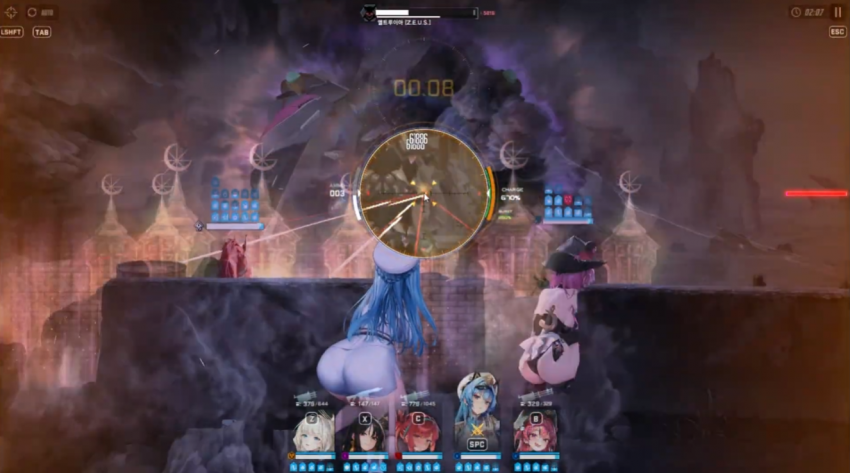
풀버를 빠르게 켜줘야 하는 이유가 족자저지 패턴 시간이 너무 촉박하기 때문임
저지 패턴 끝나자마자 헬름으로 버충해서 빠르게 라피 버스트를 켜줘야 딜이 안 부족한데
만약 저때 조금이라도 늦으면 그로기 타이밍에 라피 버스트 딜을 넣는게 아니라 족자저지때 킨 헬름 버스트 타이밍에 딜을 넣게 되므로 딜 부족으로 못 깨게 됨
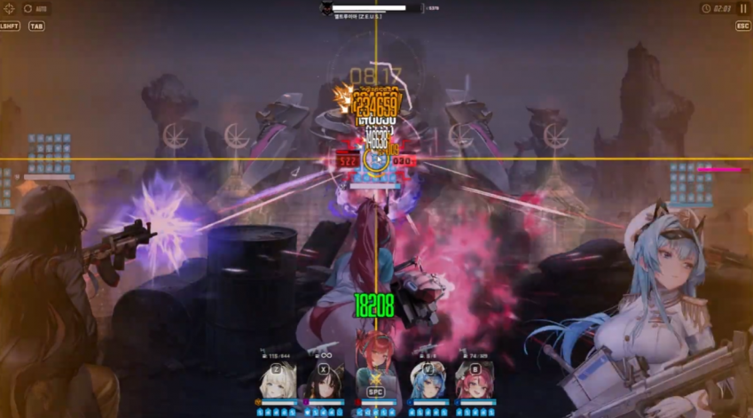
족자저지 끝나고 그로기 타이밍에는 그냥 몸체 때려주면 됨 억지로 광휘 때리려다가 라피 탄 질질 새니까 몸체 패는게 더 셈
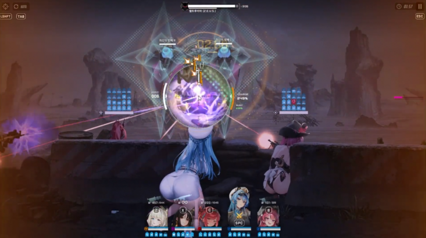
이러면 노아 방패 패턴으로 진입하는데 이때는 우리가 할 수 있는게 없음 ㅋㅋ
풀버도 키지 말고 그냥 투사체 날라오는거만 잘 보면서 피해주도록 하삼
이때 풀버 키면 방패 패턴 끝나자마자 바로 광역딜 5번 때리는 패턴 나오는데 이거 맞고 전멸함
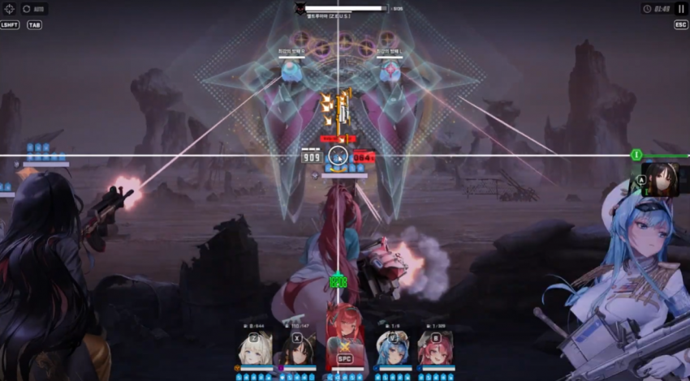
첫 투사체 패턴때는 이렇게 버스트 채워놓기만 하면 됨
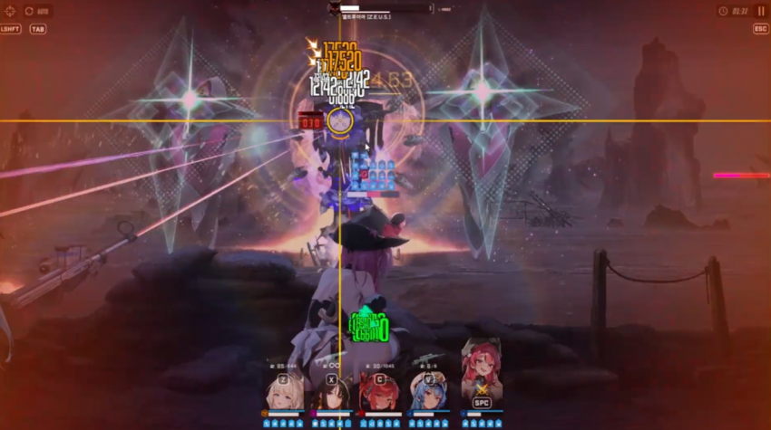
광역패턴 나오면 바로 메스트 잡아야 함 메스트 빼고 나머진 맞딜로 버티는데 메스트는 딜이 약해서 맞딜하면 마지막 5방째에 맞고 뒤짐
버스트도 무조건 크라운으로 켜야됨 그래야 광역딜 첫발을 크라운 실드로 버틸 수 있음
여기까지 왔으면 이제 끝임 남은 패턴은 쭉 반복됨
다만 주의해야 할 점은 저 광역딜 패턴 다음에 광휘 패턴이 나오는데 광휘 패턴 끝난 뒤에 2스택 메스트를 헬름 버스트에 묻혀줘야 함
왜냐면 3스택을 라피에 맞춰주고 싶어도 라피 버스트 타이밍엔 노아 방패 패턴이라 딜이 1밖에 안 들어가서 헬름 버스트를 저때 강하게 때려야 딜을 최대한 욱여넣을 수 있음
이 밑은 트라이할때 참고한 영상들임
https://www.youtube.com/watch?v=7M13spR8Sfk

https://www.youtube.com/watch?v=IIfXb86FZco
이 밑은 내가 트라이 하면서 본 체력바
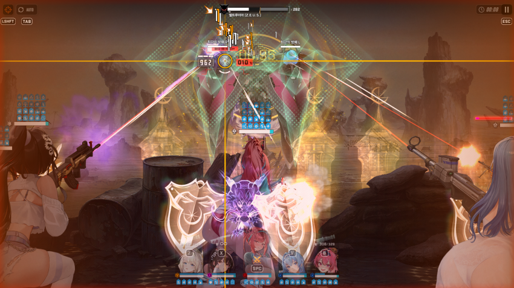
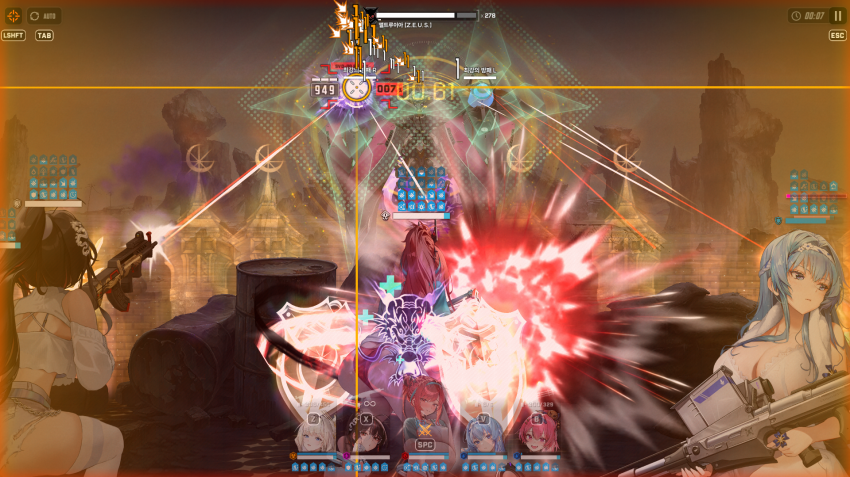
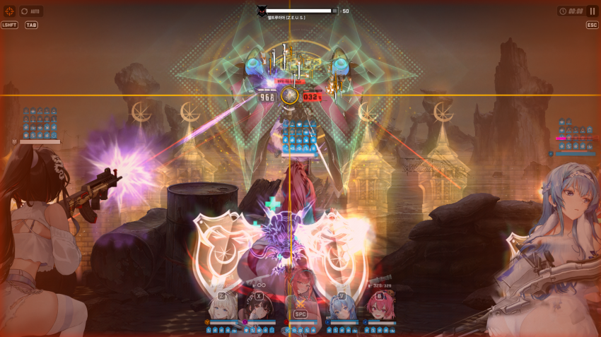
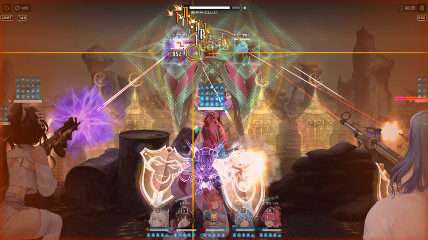
8줄 남기고 못 잡았을 때 진짜 마우스 부술 뻔 했음 씨팔